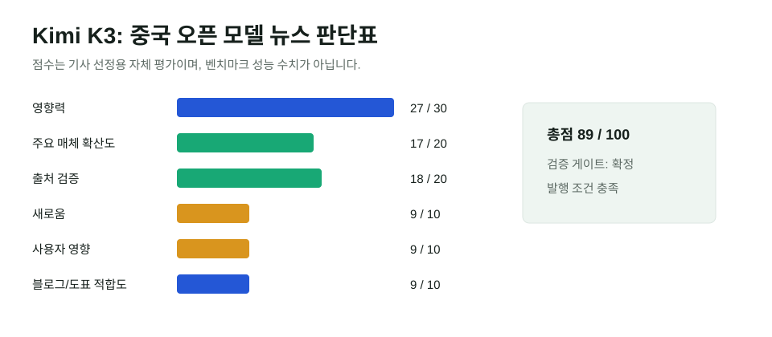

Kimi K3, 중국 오픈 모델이 다시 AI 시장을 흔든 이유
Moonshot AI의 Kimi K3는 단순한 새 모델 출시가 아니라, 중국 AI가 "저렴한 추격자"에서 "프런티어 가격을 흔드는 공개 모델"로 이동하고 있음을 보여주는 사건이다. 공식 자료와 AP, WSJ, MarketWatch, Artificial Analysis 보도를 교차 확인한 결과 발행 기준을 통과했다.

핵심 요약
오픈 모델 경쟁이 다시 시장 뉴스가 됐다
Kimi K3는 2.8조 파라미터, 100만 토큰 컨텍스트, 7월 27일 전체 가중치 공개 계획을 내세웠다. 성능 주장은 회사 자료만으로 단정하지 않고, Artificial Analysis와 주요 매체의 독립 보도를 함께 봐야 한다. 중요한 점은 "미국 최고 폐쇄 모델을 완전히 이겼다"가 아니라, 공개 모델이 프런티어 근처까지 올라오면서 API 의존, 가격, 인프라 투자 논리를 압박한다는 것이다.
선정 이유
이 뉴스는 중국 AI 전문 매체에만 머물지 않았다. AP가 글로벌 기술 경쟁 이슈로 다뤘고, WSJ와 MarketWatch는 반도체 및 기술주 매도와 연결했다. Moonshot의 공식 자료, Kimi 기술 블로그, Artificial Analysis의 독립 평가가 있어 "출시 사실"과 "시장 반응"은 확인된다. 다만 세부 벤치마크 순위와 운영비 우위는 평가 환경에 따라 달라질 수 있어 본문에서 단정하지 않았다.
| 항목 | 점수 | 판단 |
|---|---|---|
| 영향력 | 27/30 | 오픈 모델, 중국 AI, 반도체 투자 심리를 동시에 건드림 |
| 일반 주요 매체 확산도 | 17/20 | AP, WSJ, MarketWatch, Business Insider 등에서 반복 보도 |
| 신뢰도/출처 검증 | 18/20 | 공식 자료와 독립 평가, 주요 매체 교차 확인 |
| 새로움/중복 회피 | 9/10 | 기존 DeepSeek·GLM 글과 다른 Moonshot Kimi K3 신규 이슈 |
| 사용자 영향 | 9/10 | 개발자 모델 선택, 기업 API 비용, 한국 AI 서비스 전략과 직접 연결 |
| 블로그·시각화 적합도 | 9/10 | 검증표와 판단표로 설명 가능 |
| 총점 | 89/100 | 발행 |
| 검증 항목 | 결과 | 근거 |
|---|---|---|
| 원문 확인 | 확정 | Moonshot/Kimi 공식 페이지와 Kimi K3 기술 블로그에서 출시, 2.8T, 1M context, 가중치 공개 계획 확인 |
| 독립 확인 | 확정 | AP, WSJ, MarketWatch가 같은 핵심 사실과 시장 반응을 보도 |
| 전문매체 확인 | 확정 | Artificial Analysis가 프런티어 모델 순위와 비용·속도 측면을 독립적으로 해석 |
| 반대 확인 | 부분 확인 | 일부 전문가와 매체는 최고 폐쇄 모델을 전면 추월했다는 해석을 과장으로 봄 |
| 날짜 확인 | 확정 | 공식 출시 2026년 7월 16일, 주요 보도 7월 17~18일 |
| 수치 확인 | 확정/주의 | 2.8T와 1M context는 공식 자료 기준. 벤치마크 순위는 평가기관별 차이를 표시 |
| 이해관계 | 표시 | 성능 주장의 일부는 회사 발표, 시장 영향은 매체와 시장 보도 기반 |
본문 해설
Kimi K3의 의미는 "중국이 최고 모델을 만들었다"는 단순한 문장이 아니다. 공식 자료 기준 K3는 대형 MoE 구조, 100만 토큰 컨텍스트, 장기 코딩·지식 작업을 앞세운다. 여기에 가중치 공개 계획이 붙으면서 기업 사용자는 폐쇄형 API에 계속 묶일지, 자체 호스팅 가능한 공개 모델을 평가할지 다시 계산하게 된다.
시장 반응이 컸던 이유도 여기에 있다. WSJ와 MarketWatch는 Kimi K3를 반도체·기술주 매도와 연결했다. 값싸고 강한 공개 모델이 늘어나면 Nvidia 중심의 고가 인프라 투자 논리가 약해진다는 우려다. 하지만 이 해석은 절반만 맞다. K3 같은 거대 모델도 실제 운영에는 막대한 추론 인프라가 필요하다. 공개 모델은 비용을 없애는 것이 아니라, 누가 비용을 부담하고 어디서 최적화할지를 바꾼다.
반대 해석/주의할 점
이 모듈을 넣은 이유는 성능 주장이 과장되기 쉬운 사안이기 때문이다. Moonshot의 수치와 독립 벤치마크가 같은 방향을 가리키더라도, 벤치마크는 영어·텍스트 중심인지, 에이전트 작업인지, 코딩 작업인지에 따라 순위가 달라진다. 따라서 이 글은 Kimi K3를 "최고 모델"로 단정하지 않고 "공개 모델 경쟁의 가격 압박"으로 해석한다.
글로벌 시각 vs 한국 시각
글로벌 시장에서는 미국 폐쇄형 모델과 중국 공개 모델의 권력 균형이 핵심이다. 한국 독자에게는 모델 선택 기준의 변화가 더 중요하다. 국내 기업은 최상위 성능 하나만 볼 것이 아니라 데이터 통제, 라이선스, 추론비, 한국어 품질, 보안 검증을 함께 비교해야 한다. 공개 모델이 강해질수록 "어느 모델이 가장 똑똑한가"보다 "어느 업무에 어떤 비용 구조가 맞는가"가 중요해진다.
이미지/표 참고 링크
외부 사진과 매체 이미지는 재게시하지 않았다. 위 SVG는 기사 검증 점수를 바탕으로 직접 제작했고, 원문 데이터와 평가 근거는 출처 섹션에 링크했다.
저작권 주의사항
AP, WSJ, MarketWatch 등의 기사 본문과 사진은 재게시하지 않고 링크와 요약만 사용했다. Reuters/AP/Getty 계열 사진은 사용하지 않았다. 공식 제품 이미지는 사용 조건 확인이 충분하지 않아 제외했다.
발행 전 확인 포인트
- 7월 27일 가중치 공개가 실제로 이행되는지 추후 확인한다.
- Artificial Analysis 외 다른 독립 벤치마크가 나오면 성능 표현을 업데이트한다.
- 기업 도입 관점에서는 라이선스와 실제 추론비를 별도로 검증해야 한다.